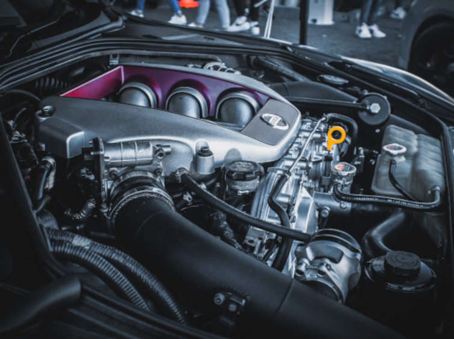

Clique sobre as áreas destacadas em vermelho

Com um SuperCarro como este que percorre mais de 730 kilometros por sengundos, dando ao automobílista um comforto e segurança.
A borracha foi preparada para aguentar buracos, picos, e muitos obstáculos que possam danicar a camada resistente do Pneu.